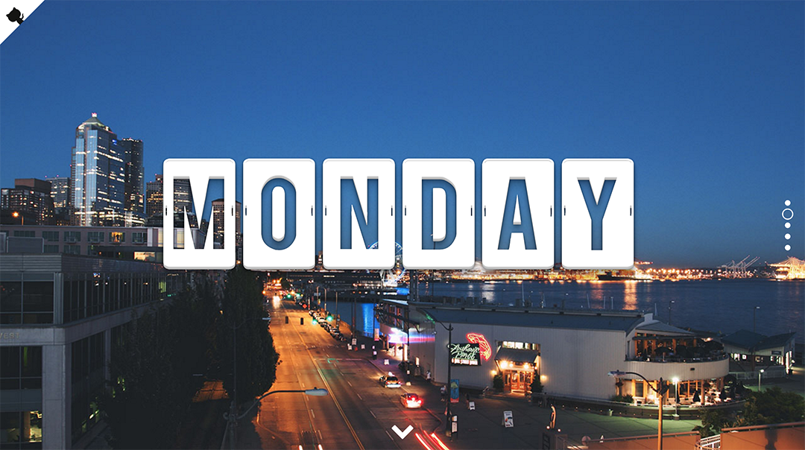

We got a break from Ruby on Rails this weekend (but that didn’t mean we had the weekend off)! Instead we had a weekend front end hackathon that turned out to be a lot of fun. The assignment was to build something cool while using a front end library that we have not used before. I made a completely random page doing a bunch of things that I have been wanting to do, but just have not been able to fit into previous projects.
The libraries I used that I have not before were fullPage.js, Typed.js, Lettering.js, and BigVideo.js. I also got to add some different CSS properties like radial gradient and blend mode. You can view it on GitHub Pages.